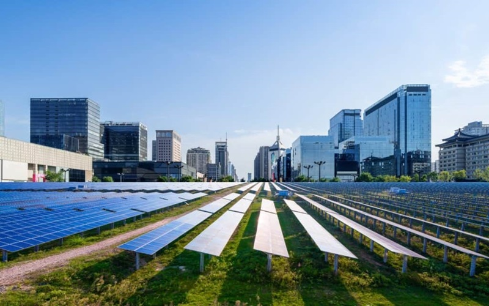
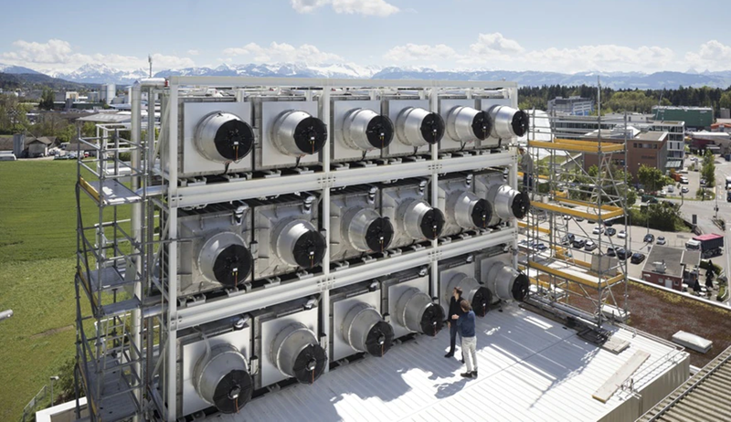
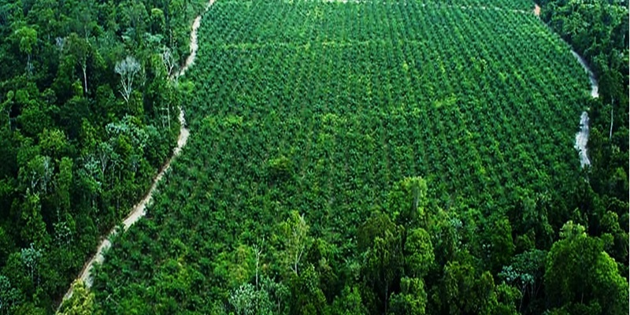
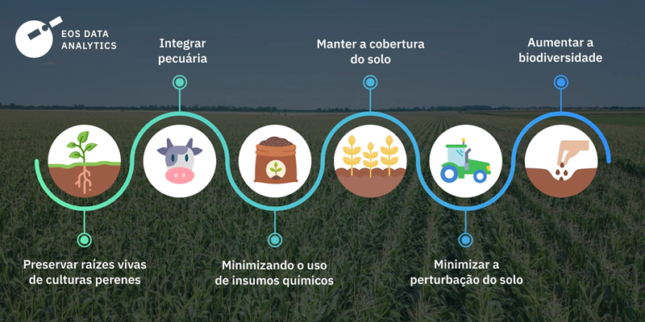
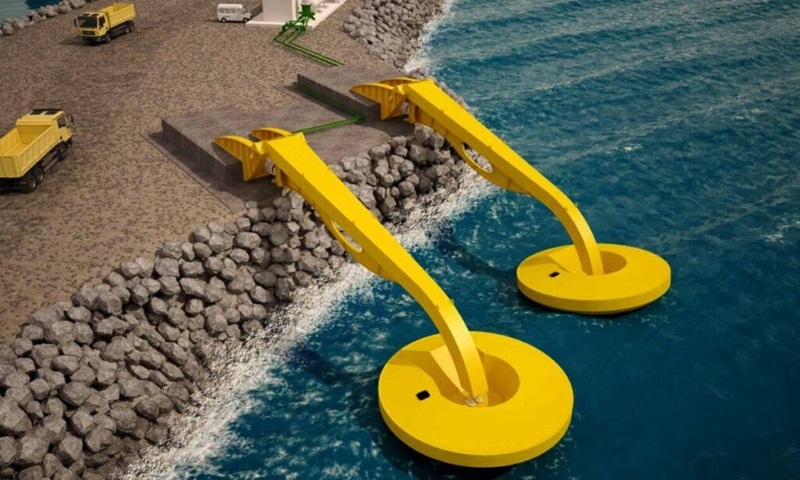

O que está por vir?
Conheça os projetos planejados por governos, empresas e organizações para reduzir os efeitos das mudanças climáticas no futuro.
1. Cidades Carbono Zero
Projetos urbanos que visam zerar as emissões de carbono por meio de energia limpa, construções sustentáveis e mobilidade elétrica.
2. Tecnologias de Captura de Carbono
Investimentos em máquinas e tecnologias que capturam CO₂ diretamente da atmosfera estão sendo testados em vários países.
3. Reflorestamento em larga escala
Grandes áreas de reflorestamento estão sendo planejadas para restaurar ecossistemas degradados e absorver gases do efeito estufa.
4. Agricultura regenerativa
Práticas agrícolas que recuperam o solo, capturam carbono e aumentam a produtividade sustentável vêm sendo planejadas para larga escala.
5. Inovação em energia limpa
Novas fontes de energia como hidrogênio verde, energia das marés e painéis solares ultraleves estão em desenvolvimento para o futuro.
